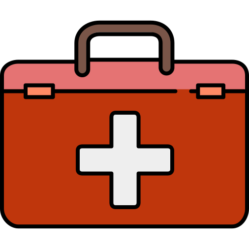

<<ion-header [translucent]="true">
  <ion-toolbar>
    <ion-buttons slot="start">
      <ion-back-button></ion-back-button>
    </ion-buttons>
    <ion-title> Procedures </ion-title>
  </ion-toolbar>
</ion-header>

<ion-content [fullscreen]="true">
  <ion-grid>
    <ion-row>
      <ion-col width-50 style="text-align: center">
        <ion-button
          color="light"
          class="button1"
          routerLink="upcoming-procedures"
          expand="block"
          style="font-size: 17px"
          >Upcoming Procedures</ion-button
        >
      </ion-col>
    </ion-row>
    <ion-row>
      <ion-col width-50 style="text-align: center">
        <ion-button
          color="light"
          class="button2"
          routerLink="past-procedures"
          expand="block"
          style="font-size: 17px"
          >Past Procedures</ion-button
        ></ion-col
      >
    </ion-row>
  </ion-grid>
</ion-content>
